Bicycle1 model · 6 paint jobs
The Bikes update (free) added the Cykel. The store page: Available in six different colors, the Cykel that you will receive at the start will be the Sky Blue, with the Emerald Green, Ruby Red, Butter Yellow, Amethyst Purple, and Flamingo Pink made available upon killing certain machine types.
Cykel (bicycle)
The Cykel is a jack-of-all-trades bicycle of Swedish make. Allowing you to gain a great deal of speed on flatter surfaces, the bike makes it faster and easier to discover more safe houses and secrets that the world holds, while also providing a means of gaining distance between you and any machines that might spot you along the way. (Steam store)
Sky Blue comes with the pack; the other 5 colours you find or earn in the game.
Motorbikes4 models · 24 paint jobs
The tuned moped is free; the other three came with the Motorbikes Pack. The store page says they need fuel (jerry cans from abandoned cars and gas stations, or crafted), they need repairs now and then (repair kits, found or crafted) and they are loud and can draw machines to you.
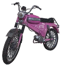
Tuned moped
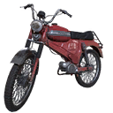
Crimson Red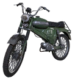
Forest Green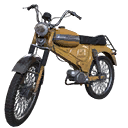
Mellow Yellow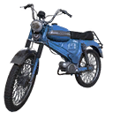
Midnight Blue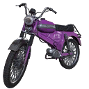
Tyrian Purple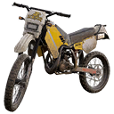
Dirt bike
Lets you go offroad! It’s powerful enough to drive through vegetation without much of an issue. (Steam store)
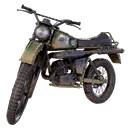
Military motorcycle
Big and clunky but very fast! Not the easiest one to drive but definitely not easy to destroy! (Steam store)
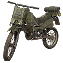
Resistance custom
Truly resistant motorbike built by the Resistance! The armor around it is made with destroyed machine parts and scrap. (Steam store)
Flakmopeds4 models · 24 paint jobs
Flakmopeds are three-wheeled motorbikes with a flatbed at the front. The plain Flakmoped is free; the Stridsflak, Terrängflak and Bruksflak came with the Reinforced Flakmoped Pack.
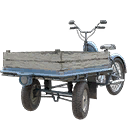
Flakmoped
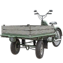
Green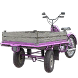
Pink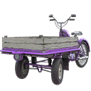
Purple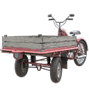
Red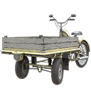
Yellow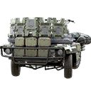
Stridsflak
Damage machines by crashing into them with this heavily fortified flakmoped. It's ready for the impact – the machines are not. (Steam store)
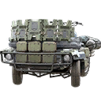
Blue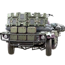
Pink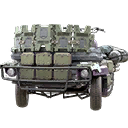
Purple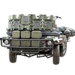
Red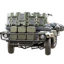
Yellow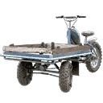
Terrängflak
Rugged terrain is no problem with this offroader. It's equipped with deep treads and robust suspension to get you and your flatbed passengers across uneven ground faster. (Steam store)
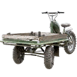
Green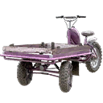
Pink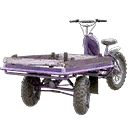
Purple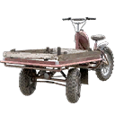
Red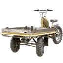
Yellow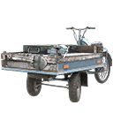
Bruksflak
In this world, you need to be ready for anything. That makes this utility flakmoped indispensable. (Steam store)
Safehouses on the map. Vehicles are spawned at the vehicle station of a safehouse; the map shows all 104 safehouses.